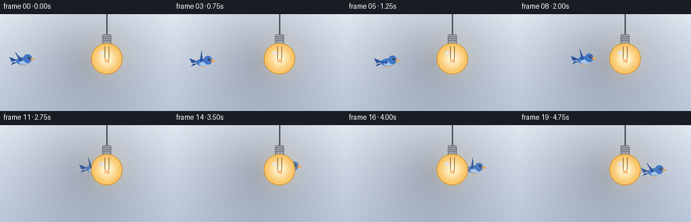
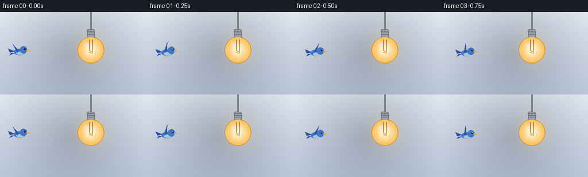

CODING AGENTS AS PIXEL WORLD MODELS
traex/Seed-2.1-Pro-0915 · dynamic_spatial_relationship_0041
点击播放 · 原生 RGB 像素
逐轮保存的候选
回放视频、检查图与代码变化。
每份候选均可单独播放。实际图片检查记录在下方工具轨迹中。
候选 01播放与检查图
点击播放 · 原生 RGB 像素


展开代码变化
--- 上一保存版本
+++ 本次保存版本
@@ -0,0 +1,205 @@
+"""Procedural t2v clip: a bird flies from the left behind a glowing lightbulb.
+
+Renders 20 RGB frames (256x144, 4 fps) purely with PIL/numpy geometry. The
+lightbulb is composited after the bird, so overlap reads as the bird passing
+behind the opaque glass. Everything is drawn at 2x and downsampled (Lanczos)
+for smooth edges.
+"""
+import math
+
+import numpy as np
+from PIL import Image, ImageDraw
+
+import artifact_io
+
+W, H, N, FPS = 256, 144, 20, 4.0
+SS = 2 # supersampling factor
+SW, SH = W * SS, H * SS
+
+BULB_X, BULB_Y, BULB_R = 158.0, 66.0, 23.0
+BIRD_Y = 68.0
+
+
+def smoothstep(t):
+ t = np.clip(t, 0.0, 1.0)
+ return t * t * (3.0 - 2.0 * t)
+
+
+def radial_layer(radius, color, peak_alpha, falloff=2.0, solid_radius=0.0):
+ """Transparent square tile with a soft radial gradient (supersampled)."""
+ r = radius * SS
+ side = int(math.ceil(r * 2))
+ yy, xx = np.mgrid[0:side, 0:side].astype(np.float32)
+ d = np.hypot(xx - r, yy - r) / max(r, 1e-6)
+ alpha = np.clip(peak_alpha * (1.0 - d) ** falloff, 0, 255)
+ if solid_radius > 0:
+ alpha[d <= solid_radius] = peak_alpha
+ tile = np.zeros((side, side, 4), dtype=np.uint8)
+ tile[..., 0] = color[0]
+ tile[..., 1] = color[1]
+ tile[..., 2] = color[2]
+ tile[..., 3] = alpha.astype(np.uint8)
+ return Image.fromarray(tile, "RGBA")
+
+
+def paste_radial(canvas, tile, cx, cy):
+ canvas.alpha_composite(tile, (int(cx * SS - tile.width / 2),
+ int(cy * SS - tile.height / 2)))
+
+
+def make_background():
+ top = np.array([233, 239, 248], dtype=np.float32)
+ bottom = np.array([193, 205, 224], dtype=np.float32)
+ mix = np.linspace(0.0, 1.0, SH, dtype=np.float32)[:, None, None]
+ arr = top[None, None] * (1 - mix) + bottom[None, None] * mix
+ arr = np.repeat(arr, SW, axis=1).astype(np.uint8)
+ img = Image.fromarray(arr, "RGB").convert("RGBA")
+ # Gentle corner vignette for depth.
+ vignette = radial_layer(max(W, H) * 0.75, (16, 24, 40), 70, falloff=1.4)
+ layer = Image.new("RGBA", (SW, SH), (0, 0, 0, 0))
+ paste_radial(layer, vignette, W / 2, H / 2)
+ img = Image.alpha_composite(img, layer)
+ return img
+
+
+def rotate(px, py, ang):
+ c, s = math.cos(ang), math.sin(ang)
+ return px * c - py * s, px * s + py * c
+
+
+def poly(draw, points, pivot, fill, outline=None, width=1):
+ pts = [(int((pivot[0] + x) * SS), int((pivot[1] + y) * SS)) for x, y in points]
+ draw.polygon(pts, fill=fill, outline=outline, width=width)
+
+
+def draw_bird(canvas, cx, cy, t):
+ """Stylized bluebird facing +x, drawn around pivot (cx, cy)."""
+ layer = Image.new("RGBA", (SW, SH), (0, 0, 0, 0))
+ d = ImageDraw.Draw(layer)
+ pivot = (cx, cy)
+ body = (66, 118, 196, 255)
+ body_dark = (44, 82, 156, 255)
+ belly = (162, 198, 236, 255)
+ beak = (240, 158, 64, 255)
+
+ # Tail feathers (behind the body).
+ poly(d, [(-8, -1), (-20, -6), (-17, 1)], pivot, body_dark)
+ poly(d, [(-8, 1.5), (-18, 6), (-15, 2)], pivot, body_dark)
+
+ # Body and lighter belly.
+ d.ellipse([(cx - 10) * SS, (cy - 5.5) * SS,
+ (cx + 10) * SS, (cy + 5.5) * SS], fill=body)
+ d.ellipse([(cx - 6) * SS, (cy - 0.5) * SS,
+ (cx + 8) * SS, (cy + 5.2) * SS], fill=belly)
+
+ # Flapping wing: triangle rotated around the shoulder.
+ flap = math.radians(62) * math.sin(2 * math.pi * 2.5 * t)
+ shoulder = (-1.0, -1.5)
+ tip = rotate(-11.0, -12.0, flap)
+ rear = rotate(-3.0, 2.5, flap)
+ poly(d, [shoulder, (shoulder[0] + tip[0], shoulder[1] + tip[1]),
+ (shoulder[0] + rear[0], shoulder[1] + rear[1])],
+ pivot, body_dark)
+
+ # Head, beak, eye.
+ hx, hy, hr = cx + 7, cy - 3.5, 6.2
+ d.ellipse([(hx - hr) * SS, (hy - hr) * SS,
+ (hx + hr) * SS, (hy + hr) * SS], fill=body)
+ poly(d, [(12, -4.5), (18.5, -2.4), (12, -0.6)], pivot, beak)
+ ex, ey = hx + 2.2, hy - 1.4
+ d.ellipse([(ex - 1.5) * SS, (ey - 1.5) * SS,
+ (ex + 1.5) * SS, (ey + 1.5) * SS], fill=(20, 26, 40, 255))
+ d.ellipse([(ex - 0.2) * SS, (ey - 0.9) * SS,
+ (ex + 0.7) * SS, (ey - 0.1) * SS], fill=(255, 255, 255, 255))
+
+ # Tucked feet.
+ d.line([(cx - 2) * SS, (cy + 5) * SS, (cx - 3) * SS, (cy + 8) * SS],
+ fill=beak, width=max(1, SS))
+ d.line([(cx + 2) * SS, (cy + 5) * SS, (cx + 1) * SS, (cy + 8) * SS],
+ fill=beak, width=max(1, SS))
+
+ canvas.alpha_composite(layer)
+
+
+def make_bulb_layers():
+ """Returns (glow layer, opaque bulb layer), both full-size RGBA."""
+ glow = Image.new("RGBA", (SW, SH), (0, 0, 0, 0))
+ paste_radial(glow, radial_layer(62, (255, 214, 130), 85, falloff=2.1),
+ BULB_X, BULB_Y)
+ paste_radial(glow, radial_layer(30, (255, 236, 180), 70, falloff=1.8),
+ BULB_X, BULB_Y)
+
+ bulb = Image.new("RGBA", (SW, SH), (0, 0, 0, 0))
+ d = ImageDraw.Draw(bulb)
+ bx, by, r = BULB_X * SS, BULB_Y * SS, BULB_R * SS
+
+ # Cord and hanging screw base (above the glass).
+ d.line([bx, 0, bx, by - r - 13 * SS], fill=(70, 76, 88, 255),
+ width=2 * SS)
+ base_top, base_bot = by - r - 13 * SS, by - r + 2 * SS
+ d.rounded_rectangle([bx - 6.5 * SS, base_top, bx + 6.5 * SS, base_bot],
+ radius=2 * SS, fill=(158, 162, 172, 255),
+ outline=(104, 108, 118, 255), width=SS)
+ for k in range(3):
+ yy = base_top + (3 + k * 3.2) * SS
+ d.line([bx - 6 * SS, yy, bx + 6 * SS, yy],
+ fill=(104, 108, 118, 255), width=SS)
+ d.rounded_rectangle([bx - 3 * SS, base_bot, bx + 3 * SS,
+ base_bot + 3 * SS], radius=SS,
+ fill=(132, 136, 146, 255))
+
+ # Glass globe: warm radial gradient with anti-aliased edge.
+ side = int(2 * (r + 2))
+ yy, xx = np.mgrid[0:side, 0:side].astype(np.float32)
+ dist = np.hypot(xx - side / 2, yy - side / 2)
+ t = np.clip(dist / r, 0, 1)
+ inner = np.array([255, 248, 214], dtype=np.float32)
+ outer = np.array([250, 196, 102], dtype=np.float32)
+ s = t * t * (3 - 2 * t)
+ rgb = inner * (1 - s[..., None]) + outer * s[..., None]
+ alpha = np.clip((r + 1.5 - dist) / 2.0, 0, 1) * 255
+ tile = np.dstack([rgb, alpha]).astype(np.uint8)
+ bulb.alpha_composite(Image.fromarray(tile, "RGBA"),
+ (int(bx - side / 2), int(by - side / 2)))
+
+ # Glass outline, filament, supports and specular highlight.
+ d.ellipse([bx - r, by - r, bx + r, by + r],
+ outline=(196, 138, 46, 255), width=max(1, SS))
+ d.line([bx - 3 * SS, by - r + 5 * SS, bx - 3 * SS, by - 1 * SS],
+ fill=(120, 96, 60, 255), width=SS)
+ d.line([bx + 3 * SS, by - r + 5 * SS, bx + 3 * SS, by - 1 * SS],
+ fill=(120, 96, 60, 255), width=SS)
+ zig = [(bx - 3 * SS, by - 1 * SS)]
+ for k in range(4):
+ zig.append((bx + (-1 if k % 2 == 0 else 1) * 3 * SS,
+ by + (1 + k * 1.6) * SS))
+ zig.append((bx + 3 * SS, by - 1 * SS))
+ d.line(zig, fill=(232, 118, 32, 255), width=max(1, SS), joint="curve")
+ d.ellipse([bx - 11 * SS, by - 11 * SS, bx - 4 * SS, by - 6 * SS],
+ fill=(255, 255, 255, 150))
+
+ return glow, bulb
+
+
+def main():
+ background = make_background()
+ glow, bulb = make_bulb_layers()
+ frames = []
+ for i in range(N):
+ t = i / (N - 1)
+ frame = background.copy()
+ # Ease-in-out flight from the left to just past the bulb's far edge.
+ x = 34 + (202 - 34) * smoothstep(t)
+ y = BIRD_Y + 4.0 * math.sin(2 * math.pi * 1.0 * t + 0.4)
+ draw_bird(frame, x, y, t)
+ frame = Image.alpha_composite(frame, glow)
+ frame = Image.alpha_composite(frame, bulb)
+ frame = frame.resize((W, H), Image.Resampling.LANCZOS).convert("RGB")
+ frames.append(np.asarray(frame, dtype=np.uint8))
+
+ artifact_io.save(np.stack(frames), ".")
+ print(f"Saved {N} frames at {W}x{H}, {FPS} fps")
+
+
+if __name__ == "__main__":
+ main()
可观测工具轨迹
实际执行的命令与返回图片。
命令 1exit 0
/bin/bash -lc 'ls -la && cat prompt.txt && echo "---" && cat task_spec.json && echo "---" && cat GENERATION_RULES.md'
命令 2exit 0
/bin/bash -lc 'cat artifact_io.py && echo "---" && cat player_template.html'
命令 3exit 0
/bin/bash -lc 'cd . && python generate.py && ls -la'
保存候选 1 份；完成命令 3 次；可验证图片返回 0 张。原始 API 响应与完整日志保留在本地。